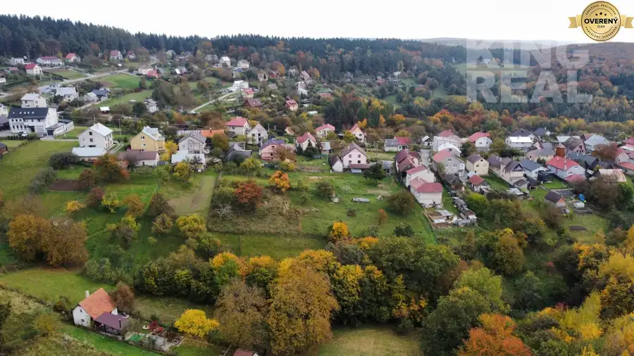

Hotel TORYSA v Sabinove
Sabinov
- Dispozícia23-izbový
- Plocha3533 m²
- Stavúplne prerobený
- Vlastníctvofiremné
O nehnuteľnosti
3D obhliadka: https://livetour.istaging.com/ecb3e672-33d4-4b26-8d18-4ef1ff6448a8
Videoobhliadka: https://youtu.be/huoMR9tAGv4
V súčastnosti hotel disponuje kapacitou 23 izieb, s možnosťou ubytovať 50 hostí.
Rozloženie izieb:
Jednoposteľová izba - 4 ks (4 osoby)
Dvojposteľová izba - 12 ks (24 osôb)
Trojposteľová izba - 1 ks (3 osoby)
Štvorposteľová izba - 1 ks (4 osoby)
De luxe izba pre 2 osoby - 3 ks (6 osôb)
Apartmán pre 2 osoby - 3 ks (6 osôb)
Reštaurácia s kaviarňou je v dennodennej prevádzke, kapacita sedenia je 45 ľudí, k dispozícií je aj salónik určený na súkromné oslavy, či konferencie.
Potencionálny investor alebo nový majiteľ bude čerpať z bohatej histórie, zabehnutej prevádzky dobrého mena a lukratívnej polohy. Hotel je v priaznivých a pozitívnych ekonomických ukazovateľoch, predpokladaná návratnosť investície je okolo 7 rokov.
Hotel Torysa poskytuje celoročné ubytovanie na úrovni trojhviezdičkového hotela v centre mesta Sabinov v kompletne zrenovovaných jednoposteľových, dvojposteľových izbách a apartmánoch. Súčasťou hotela je aj reštaurácia s kaviarňou a wellness.
Hotel Torysa tak, ako ho poznáme v súčasnej podobe funguje od roku 2005.
Budova slúžila od jej postavenia na kultúrny život Sabinovčanov. V roku 1901 ju postavilo mesto Sabinov, ktoré pociťovalo potrebu zriadiť pohostinské zariadenie vyššieho štandardu v centre mesta. Starí Sabinovčania ho poznali pod názvom Kaviarňa, Kaffehauz, Káveház, Bellevue, či Mestská kaviareň.
Neskôr sa pribudovala druhá časť, v ktorej bola nová divadelná viacúčelová sála časom vybavená aj premietačkou filmov. Objekt kaviarne bol prenajímaný rôznym nájomcom až do jeho znárodnenia. Po presťahovaní kina do novej budovy začal objekt chátrať.
Prvý plán na rekonštrukciu, ktorého cieľom bolo zlúčiť oba objekty a premeniť ich na hotel s reštauráciou malo mesto v roku 1993. To však po čase stroskotalo na vyčerpaní finančných zdrojov mesta, tak objekt ponúkli na predaj. V roku 2003 odkúpili budovu súčasní majitelia a zrekonštruovali hotel do súčasnej podoby s úctou k histórii tohto miesta. V roku 2005 bol slávnostne otvorený Hotel Torysa s kaviarňou a reštauráciou.
Pamätníci zašlej slávy Torysy privítali realizáciu rekonštrukcie vernej podobe dlhoročného strediska intelektuálneho života v Sabinove. Aj dnes sa Sabinovčania, ktorých život odvial do iných kútov krajiny, či sveta vracajú na miesto, ku ktorému ho ťahajú milé spomienky. Často so slzou v oku a radosťou v tvári konštatujú, že zašlá sláva Torysy z ich mladosti je späť a drží krok s dnešnou rýchlou dobou s gráciou Sabinovčanky.
Pre viac informácií a termíny obhliadok sa neváhajte na nás obrátiť na tel. čísle , mailom na alebo osobne na pobočke realitnej kancelárie KING REAL, Vajanského 37, 080 01 Prešov.
Parametre
| Zastavaná plocha | 2485 m² |
|---|---|
| Celková rozloha | 3533 m² |
| Počet izieb | 23 |
| Vlastníctvo | firemné |
| Stav | úplne prerobený |
| Internet | telefónna linka |
| Balkón | áno |
| Lódžia | áno |
| Terasa | áno |
| Výťah | áno |
| Parkovanie | verejné |
| Zariadenie | zariadený |
| Káblová televízia | áno |
| Dátum zverejnenia | 19. 9. 2024 |
Kde to je
Mohlo by Vás zaujímať
 Pozemok10
76 990 €Stavebný pozemok Abrahámovce, okr. Bardejov
Abrahámovce
2557 m²
Exluzívne ponúkame na predaj stavebný pozemok v obci Abrahámovce, okres Bardejov. Pozemok o rozlohe 2. 557 m2 je rovinatý, s prístupom s oboch strán.…
Pozemok10
76 990 €Stavebný pozemok Abrahámovce, okr. Bardejov
Abrahámovce
2557 m²
Exluzívne ponúkame na predaj stavebný pozemok v obci Abrahámovce, okres Bardejov. Pozemok o rozlohe 2. 557 m2 je rovinatý, s prístupom s oboch strán.…
 Nebytové priestory10
249 990 €Výrobné haly s administratívou a rozľahlým pozemkom.
Veľký Folkmar
430 m²
Exkluzívne ponúkame na predaj obchodné priestory-výrobné haly ( 2 samostatné miestnosti) a administratívnu časť s ubytovaním s priľahlými pozemkami v…
Nebytové priestory10
249 990 €Výrobné haly s administratívou a rozľahlým pozemkom.
Veľký Folkmar
430 m²
Exkluzívne ponúkame na predaj obchodné priestory-výrobné haly ( 2 samostatné miestnosti) a administratívnu časť s ubytovaním s priľahlými pozemkami v…

Pozemok10 149 990 €Stavebné pozemky, Mihaľov, Bardejov Bardejov 713.7 m² Ponúkame na predaj nádherné slnečné stavebné pozemky, v mestskej časti mesta Bardejov - MIHAĽOV. Daná lokalita predstavuje pokojné vyhľadávané miesto…